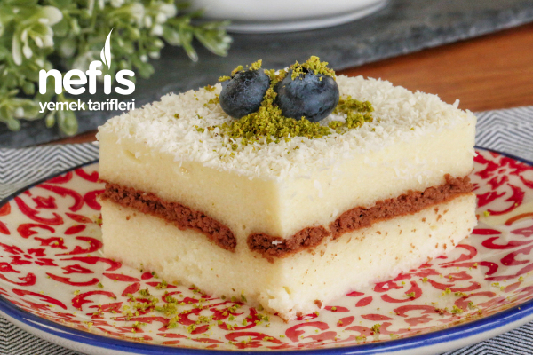

...Sütlü İrmik Tatlısı...
Pratik ve lezzetli olan tarifler hiç unutulmaz mutlaka bir şekilde saklanır. Sütlü irmik tatlısı da o tariflerden birisi benim için. İlk ne zaman yapmıştım hatırlamıyorum ama uzun senelerdir bu tarif bizim evde yapılır :)
Tarif: İsa HATİPOĞLU
Kaç Kişilik: 5 Kişilik | Hazırlama Süresi:30 dakika | Pişirme Süresi:10 dakika
Sütlü İrmik Tatlısı için Malzeme Listesi
- 1 paket kakaolu bisküvi
- 1 su bardağı şeker
- 9 yemek kaşığı irmik
- 1 litre süt
- 1 paket vanilya
- Hindistan cevizi
Sütlü İrmik Tatlısı Nasıl Yapılır?

- Sütlü irmik tatlısı yapmak için öncelikle soğuk sütü tencereye alın
- Şeker ve irmiği ilave edin. Kısık ateşte boza kıvamına gelene kadar karıştırarak pişirin.
- Ocaktan almadan önce vanilya ekleyelim ve karıştırdıktan sonra ocaktan alalım.
- Tatlımızın yarısını borcama dökün.
- Üzerine kakaolu bisküvilerden 1 sıra dizin.
- Kalan muhallebiyi de bisküvilerin üzerine boşaltın.
- İrmik tatlımız Ilındıktan sonra buzdolabına kaldırarak birkaç saat dinlendirin.
- Soğuk olarak servis yapın. Servis yaparken üzerine ceviz, hindistan cevizi veya tarçın serpebilirsiniz.
- Dilerseniz muhallebiyi 3 eşit parçaya bölüp bisküvileri 2 kat halinde de dizebilirsiniz. Sizin tercihinize kalmış.
Afiyet olsun...